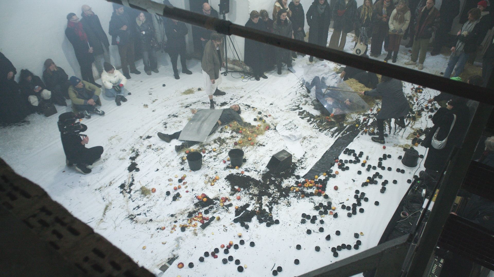
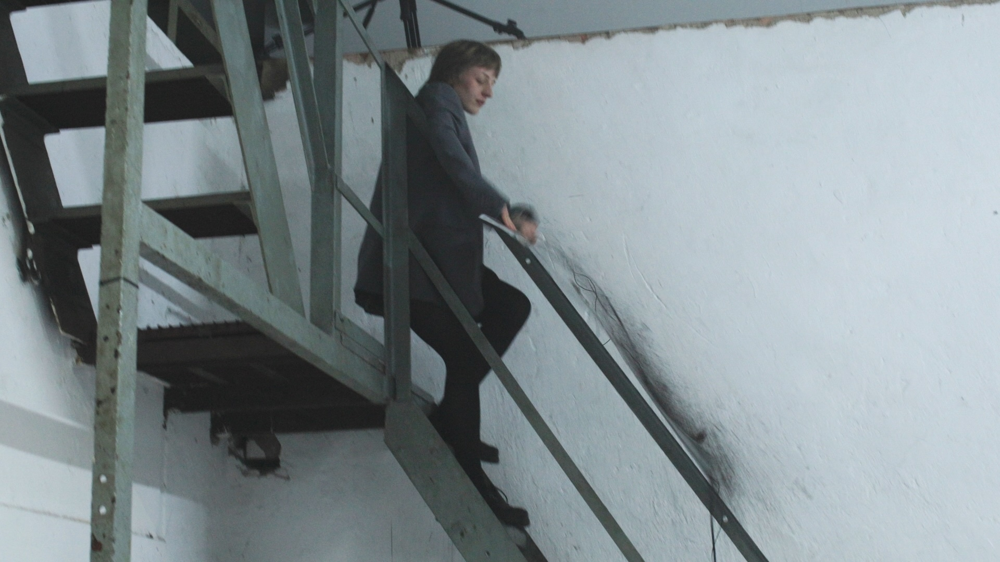
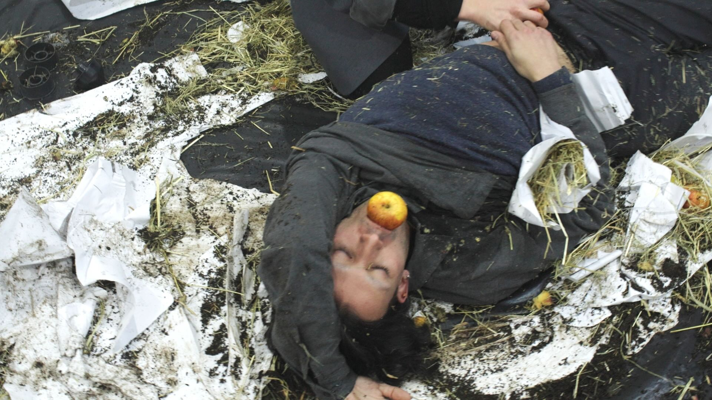

ENVIRONMENTAL PATTERNS
immersive performance, 21.01.2026

We can focus our attention on only a small number of simultaneous happenings. An increase in the volume of concurrent information leads abruptly to a dimming of consciousness, to confusion, and even to disorientation. The systems to which we are connected - such as supply chains, agricultural cycles, or social networks - evolve through an overwhelming abundance of events. In Environmental Patterns, the participants explore a fleeting Thuringian landscape whose order gradually descends into a noisy simultaneity.
Performers
L. Meïko Touraille
Maddie Marone
Mario Pytark
Jonah Martensen
Alina Trionow
Camera
Lars Elliger
Live Sound
Philipp Waltinger
Lighting
Jascha Hagen
Location
Gaswerk Weimar e.V., Schwanseestraße 92, 99423 Weimar



